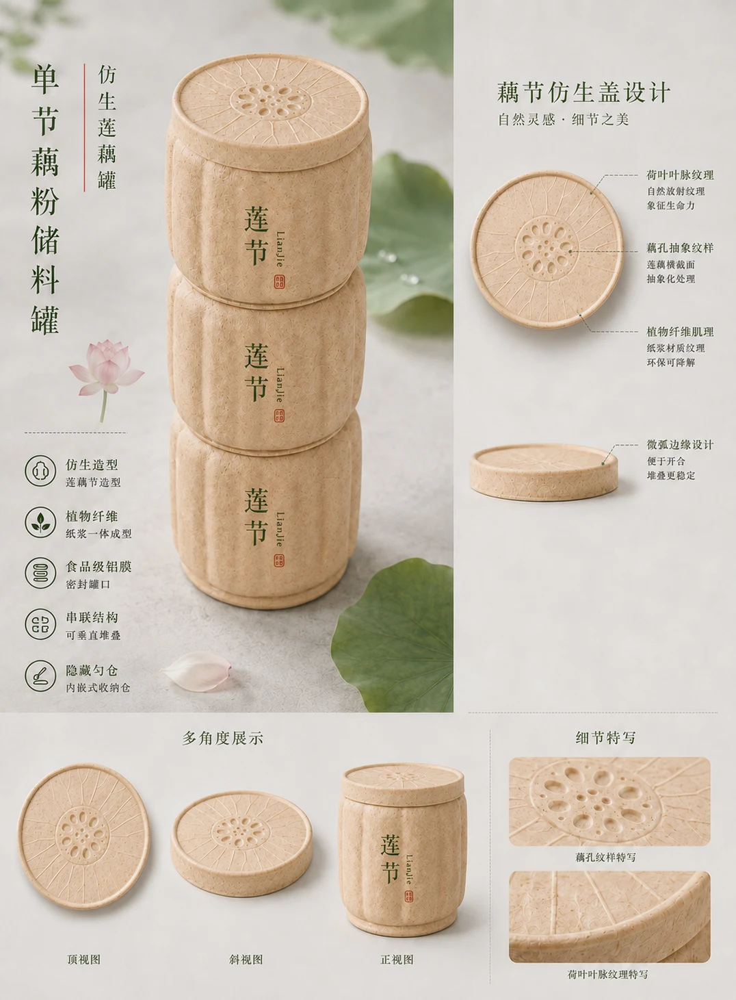
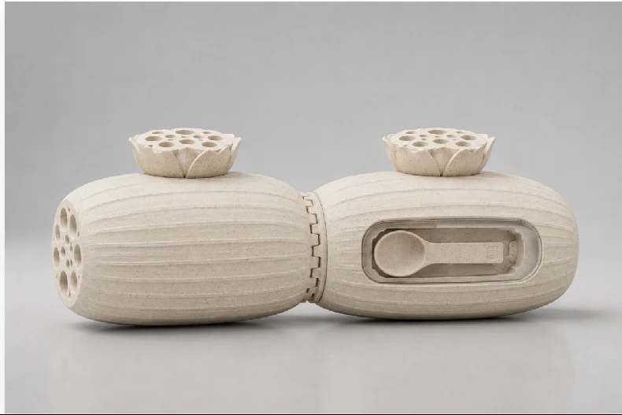
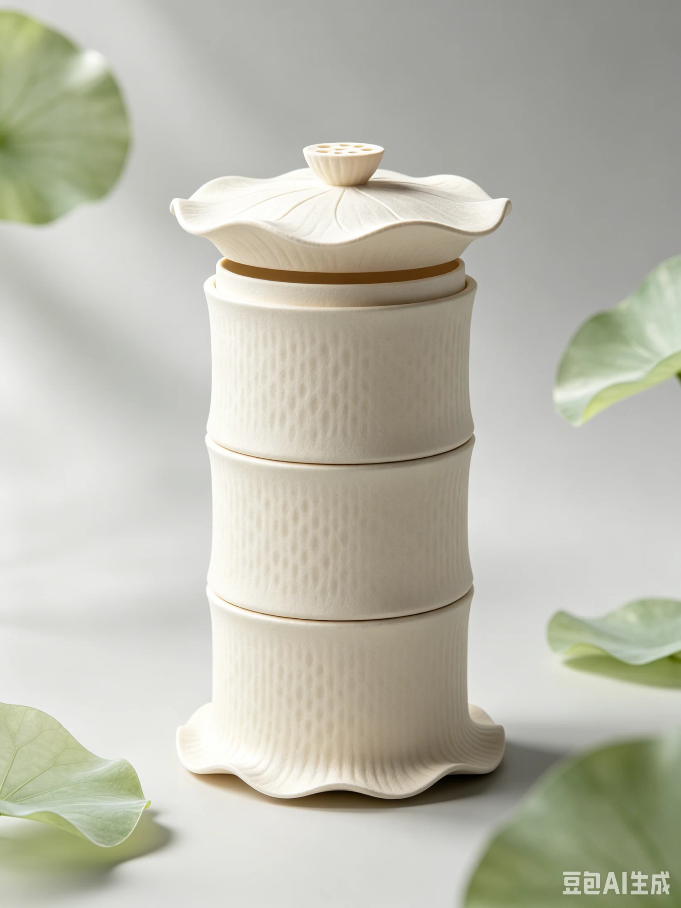
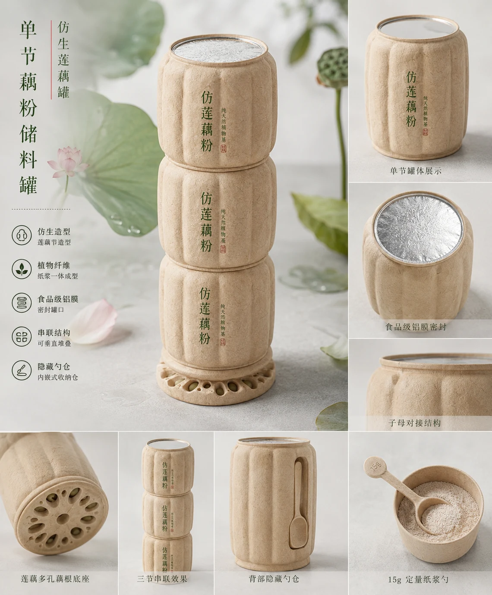
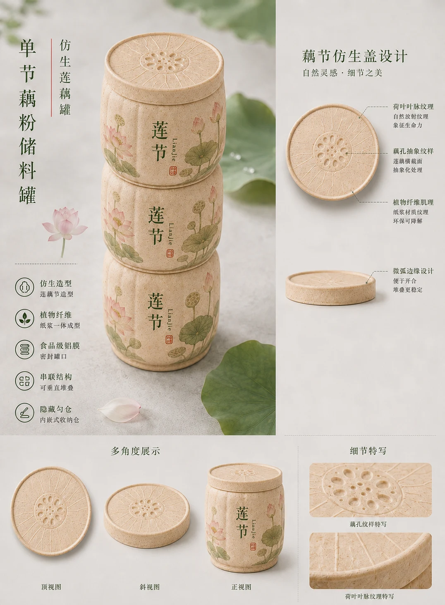
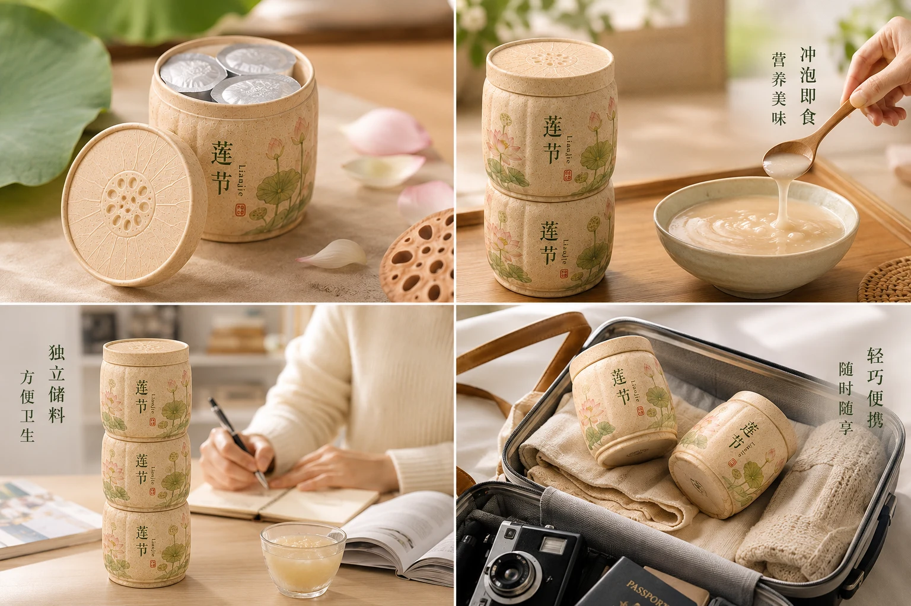
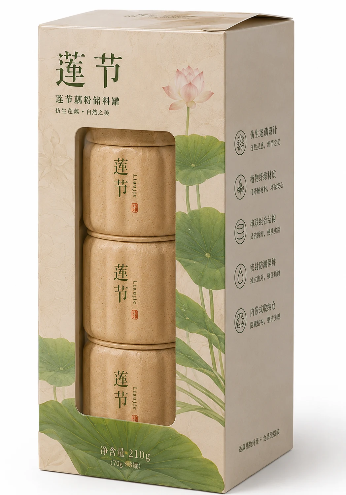
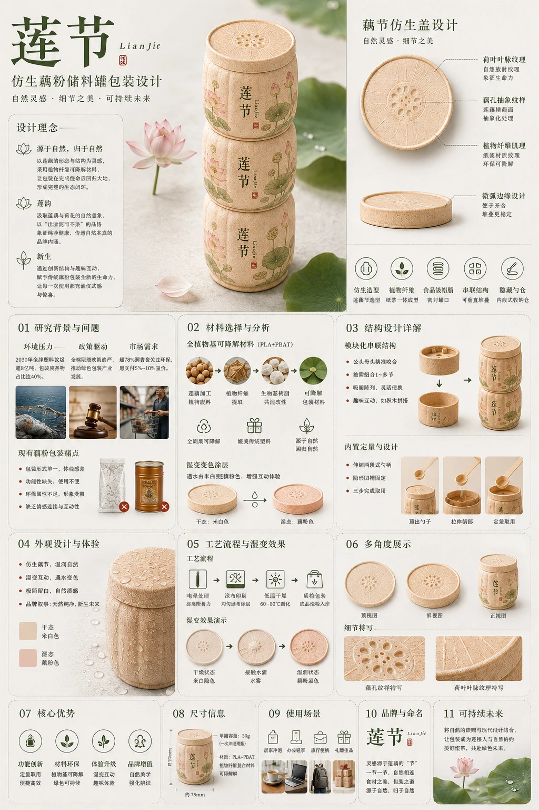

莲藕仿生藕粉可降解包装设计
从莲藕的自然形态出发，探索包装结构、取用体验与自然意象之间的联系。

本项目独立完成，使用 Adobe Photoshop（PS）与 Cinema 4D（C4D）进行设计制作。
本方案针对藕粉包装在形态辨识度、取用便利性和环保表达上的设计问题，以“莲韵”与“新生”为核心概念，将藕节形态转化为可组合的储粉单元，探索传统食品包装的新表达。
方案经历横向双联、竖向串联到最终藕节罐体的调整。设计反思聚焦于陈列占地、仿生特征辨识度、单元拆分及整体比例。


借鉴莲藕分节形态，提出上下嵌合的组合结构，探索单节使用、组合收纳及货架陈列。
提出内置可伸缩定量勺，与包装内部空间结合，减少用户额外寻找取用工具的步骤。
探索莲藕加工副产物的植物纤维利用，以及遇水呈现荷塘图案的互动视觉方案。





本页依据作者提供的设计 PPT 整理，图片为方案效果展示。材料配方、食品接触安全、降解条件、涂层性能及结构量产可行性尚无实测资料，相关内容按设计构想呈现。